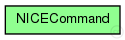

This documentation is released under the Creative Commons license
This documentation is released under the Creative Commons license(no description)
The following diagram shows usage relationships between types. Unresolved types are missing from the diagram. Click here to see the full picture.
The following diagram shows inheritance relationships for this type. Unresolved types are missing from the diagram. Click here to see the full picture.

enum NICECommand { NICE_QUERY = 0; // Querying Memberships in Clusters NICE_QUERY_RESPONSE = 1; // Responding to a Query NICE_JOIN_CLUSTER = 2; // Join Cluster in specific layer NICE_HEARTBEAT = 3; // Periodic Heartbeat message NICE_LEADERHEARTBEAT = 4; // Periodic Heartbeat message NICE_LEADERTRANSFER = 5; // Leader Transfer NICE_JOINEVAL = 6; // Distance evaluation when joining NICE_JOINEVAL_RESPONSE = 7; // Response to JoinEval NICE_REMOVE = 8; // Removes node from cluster NICE_PING_PROBE = 9; // Removes node from cluster NICE_PING_PROBE_RESPONSE = 10; // Removes node from cluster NICE_CLUSTER_MERGE_REQUEST = 11; // Requesting Cluster Merge NICE_PEER_TEMPORARY = 12; // Temporary peer while joining NICE_PEER_TEMPORARY_RELEASE = 13; // Temporary peering release NICE_POLL_RP = 14; // Poll existing RP NICE_POLL_RP_RESPONSE = 15; // Respond to RP Poll NICE_FORCE_MERGE = 16; // Force Merge to SourceNode NICE_MULTICAST = 17; // Multicast data }
This documentation is released under the Creative Commons license